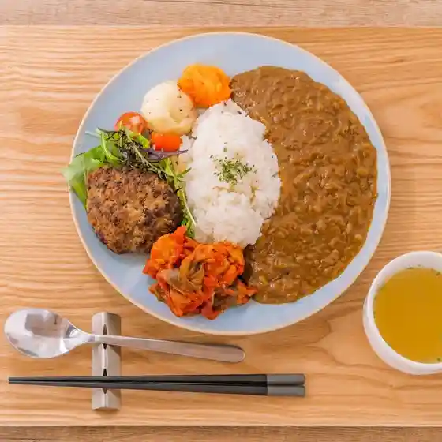
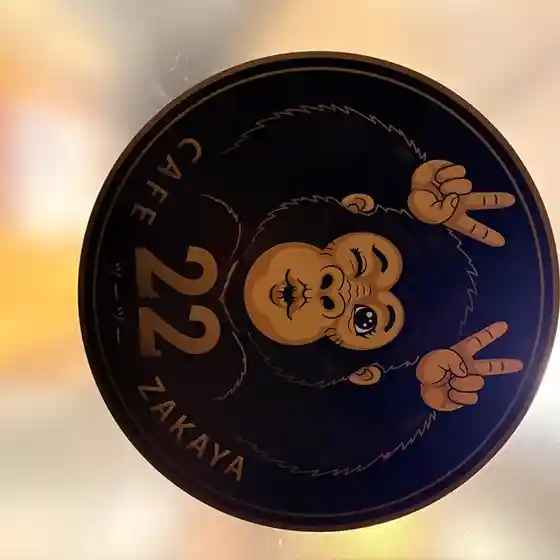
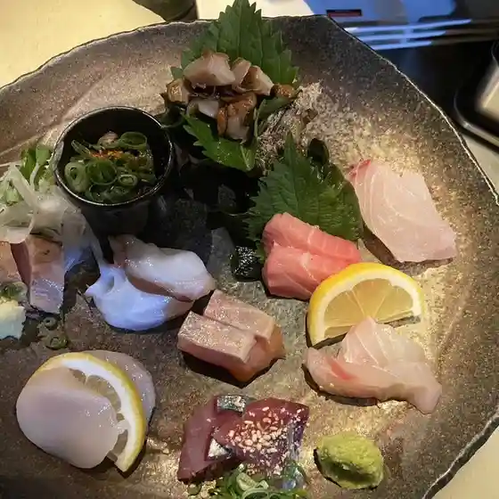
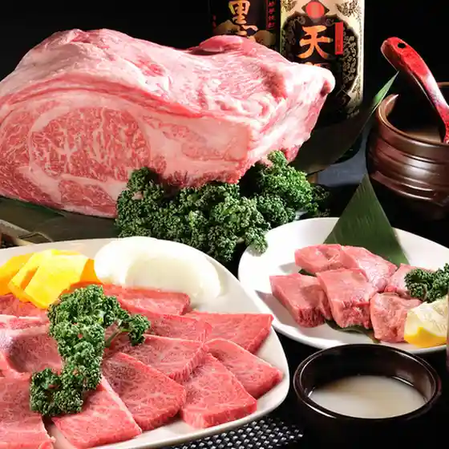
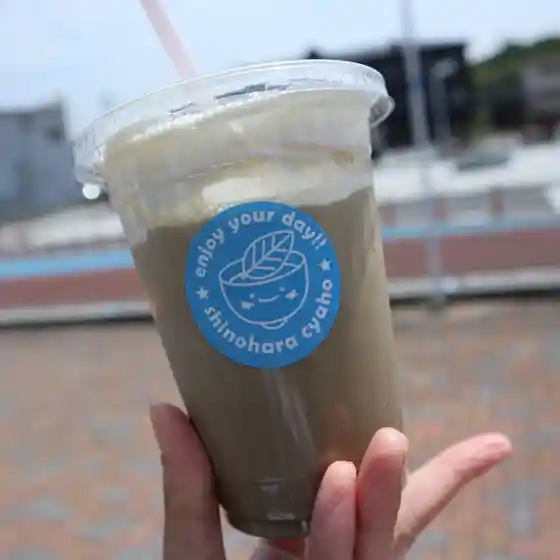
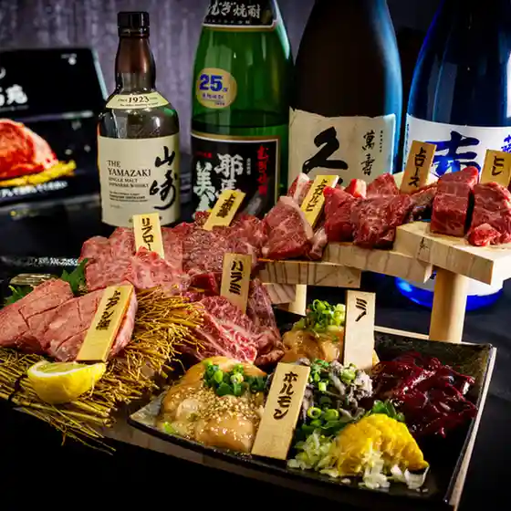
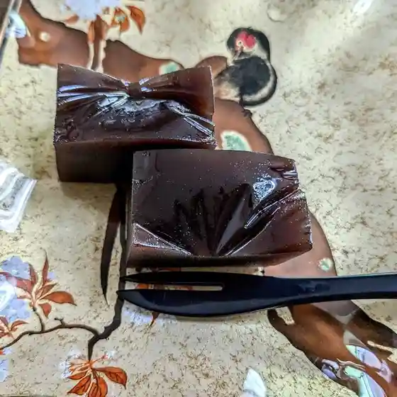
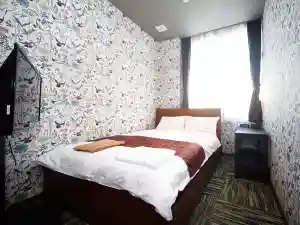

Tagawa
Tagawa · Fukuoka
Tagawa
Highlighted on the Fukuoka map.

Sights
Chiroruchokoautorettoshoppu
Mitsui Tera (Byodo Tera) Furin Tonneru

Iwaya Limestone Cave

Tagawa Shimin Puru

Tagawa Sekitan History Museum

Sekitan Memorial Park
Mitsui Tera (Byodo Tera) no Autumn Leaves
Kyu Mitsui Tagawa Kogyo Tokoro Ida Tateko Yagura
Kaze Osamu Hachiman Shrine
Kyu Mitsui Tagawa Kogyo Tokoro Ida Tateko Daiichi Daini Entotsu
Tanko Fushi
Tagawa Art Museum
Tagawa Horumon Nabe
Taiho Yama Ten Shin Tera no Autumn Leaves
Naka Village Art Museum
Kurai to Hachiman Shrine
Natsu Kichi 1 Go Burial Mound Natsu Kichi 21 Go Burial Mound
Kasuga Jinja Iwato Kagura
Dining
カフェビストロ Waltz poco
Kafebisutoro Waltz Poco

CAFEZAKAYA22
Cafezakaya22

乙 田川店
Otsu Tagawa Mise

四季亭
Shiki Tei

篠原茶舗
Shinohara Chaho

大熊ホットドッグ&たこ焼
Ookuma Hottodoggu &Amp; Tako Yaki

至高苑
Shikou En

大月堂 弓削田店
Ootsuki Dou Yugeta Mise

そば屋 牧口
Soba Ya Makiguchi
CAFE SOURIRE
Cafe Sourire
おいとま食堂
Oitoma Shokudou
モスバーガー 田川イカリ店
Mosubaagaa Tagawa Ikari Mise
ウエスト うどん 田川店
Uesuto Udon Tagawa Mise
CoCoro
Cocoro
相撲茶屋 貴ノ花
Sumou Chaya Takanohana
ピザハット メルクス田川店
Pizahatto Merukusu Tagawa Mise
TAKOYAKIBAR LA.LA.LA
Takoyakibar La . La . La
めん六や 福岡田川店
Men Roku Ya Fukuoka Tagawa Mise
すき家 201号田川店
Suki Ie 201 Gou Tagawa Mise
本場韓国焼肉 宋家
Honba Kankoku Yakiniku Souka
プルニマ 田川店
Purunima Tagawa Mise
みらい工房
Mirai Koubou
やき鳥秀吉
Yaki Tori Hidekichi
雪兎
Yukiusagi
鮮魚の穴井
Sengyo No Anai
カフェ＆スウィーツ・リジェール
Kafe & Suuiitsu・Rijieeru
光
Hikari
元祖 筑天
Ganso Tsuku Ten
太助寿司
Tasuke Sushi
mtg cafe CHEZ MARE
Mtg Cafe Chez Mare
ノエル
Noeru
季節の花と喫茶 草と土と
Kisetsu No Hana To Kissa Kusa To Tsuchi To
なかしま
Nakashima
ディスカウントショップ ミートペアーズ 秀康食工房
Disukauntoshoppu Miitopeaazu Hideyasu Shoku Koubou
はま寿司 田川店
Hama Sushi Tagawa Mise
浦島
Urashima
MEGUMI
Megumi
タント
Tanto
串屋とり啓
Kushi Ya Tori Kei
喫茶201
Kissa 201
柏木商店 本店
Kashiwagi Shouten Honten
食と酒 SAMANSA
Kutto Sake Samansa
ろくの家 田川松原店
Rokuno Ie Tagawa Matsubara Mise
味処あっぷる亭
Ajidokoro Appuru Tei
本格馬刺し居酒屋 新馬
Honkaku Basashi Shi Izakaya Shinba
ほっともっと 田川市役所前店
Hottomotto Tagawa Shiyakushomae Mise
チロルチョコ アウトレットショップ
Chiroruchoko Autorettoshoppu
TACOS DE URSA
Tacos De Ursa
まるちゃん食堂
Maruchan Shokudou
若とり
Jaku Tori
西村園茶舗 田川店
Nishimura Sono Chaho Tagawa Mise
ムササビと月
Musasabi To Gatsu
気分上々
Kibun Joujou
渓月堂
Kei Gatsu Dou
みこの森スイーツファクトリー
Mikono Mori Suiitsufakutorii
遊食家
Yuu Shoku Ie
居酒屋 きゃっつ
Izakaya Kyattsu
スパゲッティハウスエスト
Supagetteihausuesuto
CoCo壱番屋 メルクス田川店
Coco Ichiban Ya Merukusu Tagawa Mise
飯処 さいき
Meshi Tokoro Saiki
Takanohana Tagawa Fukuoka Prefecture Kyushu
Takanohana Tagawa Fukuoka Prefecture Kyushu
Takanohana Tagawa Fukuoka Prefecture Kyushu
Takanohana Tagawa Fukuoka Prefecture Kyushu
Takanohana Tagawa Fukuoka Prefecture Kyushu
Takanohana Tagawa Fukuoka Prefecture Kyushu
Takanohana Tagawa Fukuoka Prefecture Kyushu
Takanohana Tagawa Fukuoka Prefecture Kyushu
Restaurant Odong Tagawa Fukuoka Prefecture Kyushu
Restaurant Odong Tagawa Fukuoka Prefecture Kyushu
Restaurant Odong Tagawa Fukuoka Prefecture Kyushu
Restaurant Odong Tagawa Fukuoka Prefecture Kyushu
Restaurant Odong Tagawa Fukuoka Prefecture Kyushu
Restaurant Odong Tagawa Fukuoka Prefecture Kyushu
Restaurant Odong Tagawa Fukuoka Prefecture Kyushu
Restaurant Odong Tagawa Fukuoka Prefecture Kyushu
Maneki Soba Tagawa Fukuoka Prefecture Kyushu
Maneki Soba Tagawa Fukuoka Prefecture Kyushu
Maneki Soba Tagawa Fukuoka Prefecture Kyushu
Maneki Soba Tagawa Fukuoka Prefecture Kyushu
Maneki Soba Tagawa Fukuoka Prefecture Kyushu
Maneki Soba Tagawa Fukuoka Prefecture Kyushu
Maneki Soba Tagawa Fukuoka Prefecture Kyushu
Maneki Soba Tagawa Fukuoka Prefecture Kyushu
Steven Spiel Burger Tagawa Fukuoka Prefecture Kyushu
Steven Spiel Burger Tagawa Fukuoka Prefecture Kyushu
Steven Spiel Burger Tagawa Fukuoka Prefecture Kyushu
Steven Spiel Burger Tagawa Fukuoka Prefecture Kyushu
Steven Spiel Burger Tagawa Fukuoka Prefecture Kyushu
Steven Spiel Burger Tagawa Fukuoka Prefecture Kyushu
Steven Spiel Burger Tagawa Fukuoka Prefecture Kyushu
Steven Spiel Burger Tagawa Fukuoka Prefecture Kyushu
Udon Jinbei Tagawa Fukuoka Prefecture Kyushu
Udon Jinbei Tagawa Fukuoka Prefecture Kyushu
Udon Jinbei Tagawa Fukuoka Prefecture Kyushu
Udon Jinbei Tagawa Fukuoka Prefecture Kyushu
Udon Jinbei Tagawa Fukuoka Prefecture Kyushu
Udon Jinbei Tagawa Fukuoka Prefecture Kyushu
Udon Jinbei Tagawa Fukuoka Prefecture Kyushu
Udon Jinbei Tagawa Fukuoka Prefecture Kyushu
Sanzoku Nabetagawa Tagawa Fukuoka Prefecture Kyushu
Sanzoku Nabetagawa Tagawa Fukuoka Prefecture Kyushu
Sanzoku Nabetagawa Tagawa Fukuoka Prefecture Kyushu
Sanzoku Nabetagawa Tagawa Fukuoka Prefecture Kyushu
Sanzoku Nabetagawa Tagawa Fukuoka Prefecture Kyushu
Sanzoku Nabetagawa Tagawa Fukuoka Prefecture Kyushu
Yakiniku Korakuen Tagawa Fukuoka Prefecture Kyushu
Yakiniku Korakuen Tagawa Fukuoka Prefecture Kyushu
Yakiniku Korakuen Tagawa Fukuoka Prefecture Kyushu
Yakiniku Korakuen Tagawa Fukuoka Prefecture Kyushu
Yakiniku Korakuen Tagawa Fukuoka Prefecture Kyushu
Yakiniku Korakuen Tagawa Fukuoka Prefecture Kyushu
Yakiniku Korakuen Tagawa Fukuoka Prefecture Kyushu
Yakiniku Korakuen Tagawa Fukuoka Prefecture Kyushu
Kasen Tagawa Fukuoka Prefecture Kyushu
Kasen Tagawa Fukuoka Prefecture Kyushu
Kasen Tagawa Fukuoka Prefecture Kyushu
Kasen Tagawa Fukuoka Prefecture Kyushu
Kasen Tagawa Fukuoka Prefecture Kyushu
Kasen Tagawa Fukuoka Prefecture Kyushu
Kasen Tagawa Fukuoka Prefecture Kyushu
Kasen Tagawa Fukuoka Prefecture Kyushu
Ajiyoshi Tagawa Fukuoka Prefecture Kyushu
Ajiyoshi Tagawa Fukuoka Prefecture Kyushu
Ajiyoshi Tagawa Fukuoka Prefecture Kyushu
Ajiyoshi Tagawa Fukuoka Prefecture Kyushu
Ajiyoshi Tagawa Fukuoka Prefecture Kyushu
Ajiyoshi Tagawa Fukuoka Prefecture Kyushu
Yushokuya Tagawa Fukuoka Prefecture Kyushu
Yushokuya Tagawa Fukuoka Prefecture Kyushu
Yushokuya Tagawa Fukuoka Prefecture Kyushu
Yushokuya Tagawa Fukuoka Prefecture Kyushu
Yushokuya Tagawa Fukuoka Prefecture Kyushu
Yushokuya Tagawa Fukuoka Prefecture Kyushu
Belle Saison Nakamura Tagawa Fukuoka Prefecture Kyushu
Belle Saison Nakamura Tagawa Fukuoka Prefecture Kyushu
Belle Saison Nakamura Tagawa Fukuoka Prefecture Kyushu
Belle Saison Nakamura Tagawa Fukuoka Prefecture Kyushu
Belle Saison Nakamura Tagawa Fukuoka Prefecture Kyushu
Belle Saison Nakamura Tagawa Fukuoka Prefecture Kyushu
Stay
HOTEL AZ 福岡田川店
Hotel Az Fukuoka Tagawa Mise

田川伊田駅舎ホテル
Tagawa Ida Ekisha Hoteru
